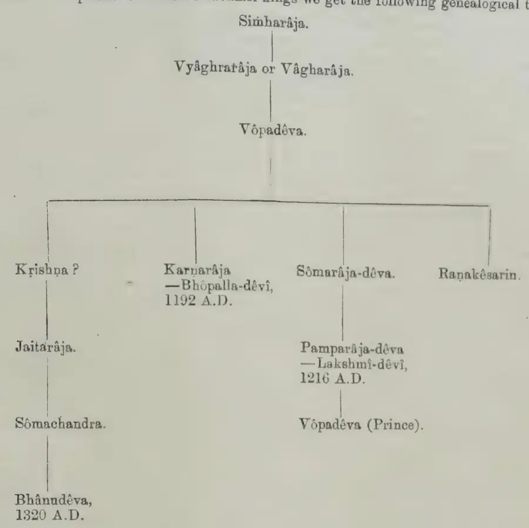

Sihâwâ inscription of Karnarâja
SIHAWA STONE INSCRIPTION OF KARNARAJA.
THE ŚAKA YEAR 1114.
This inscription is on a slab built into the wall of the Karnēśvar, vulgo Kanēsar, temple at Sihâwâ, the principal village of the tract of that name in the Dhamtarî tahṣîl of the Raipur District in the Central Provinces. It was first noticed in the Asiatic Researches, Vol. XV. p. 505, and it is referred to by General Cunningham in his Reports, Vol. VII. p. 145. The place does not seem to have been visited by any archæologist. The inscription was brought to notice by the District officials, who thought it sufficient to ascertain the date, and the full contents of the record have hitherto remained unknown. I therefore edit it from an ink impression supplied by Mr. Gokul Prasâd Iśvardâs, Tahṣîldâr of Dhamtarî, from which a reduced facsimile is reproduced in the accompanying plate.
The inscription contains 16 lines covering a space . The letters are bold and well formed. They are all intact excepting one which is broken off in line 2. Their average size is about . The script is Nâgarî, and the language is Sanskrit. The whole of the inscription is written in verse, except the invocation in the beginning, Ôm namah Śivâya, and the name of the sútradhâra at the end. There are altogether 13 verses, 4 in the Vasantatilaka metre, 8 Anushṭubhs and one Upajâti.
The following are the principal orthographical peculiarities:—s is almost invariably used for ś. The sign of the avagraha is not used at all (see lines 3, 4 and 15). Letters following an anusvâra changed from a nasal are doubled (lines 2, 10, and 13). Letters with a répha are sometimes doubled and sometimes not. Instances of doubling may be seen in lines 1 and 15, and of non-doubling in lines 2, 3, 4, 5 and 11, while lines 8, 9, 10 and 14 afford instances of both. In conjunct letters n has been used instead of the proper nasal as in panchakam and punyatah in lines 12 and 15. Simha is spelt throughout as singha, following the usual vulgar pronunciation, and, finally, in line 1 the vowel ri is used instead of the ri, tritaya being written as tritaya.
The object of the inscription is to record the construction of five temples, two in his parents' name, two in his own, and one in his issueless brother's, by king Karṇarâja of Kâkaira, and of one by his wife, queen Bhôpalla-dêvi. These were all built at the sacred place Dêvahrada. The date of the inscription is given in the last verse as Śaka 1114, without any other details as to the day or month, etc. The inscription was accordingly written in the year A.D. 1191-92, apparently after the completion of the whole group of temples, and it was put up in one of the king's own temples, in which Śiva was enshrined. The other one of those which he had built for himself was dedicated to Kêśava, who apparently occupied a secondary place in his estimation. The temple in which the slab is found, is still called Kanēsar or Karṇēśvara, after the king's own name. The writer was the sútradhâra Sùpâ, and the composer of the praśasti Nṛisimha.
The inscription opens with an invocation of the three-eyed Śiva, and in the second verse the moon, as the progenitor of the dynasty, is praised. Then begins the genealogy of the king, commencing with Simharâja, whose son was Vâgharâja, from whom was born Vòpadêva, the father of Karṇarâja, who married Bhôpalla-dêvi, and who, having conquered all the neighbouring
princes, assumed the title of a paramount sovereign. Combining the information from the other two Kâkaira inscriptions1 of these Sômavanśi kings we get the following genealogical tree :—

It would appear that Vôpadêva had four sons, but the probability is that he had only three, the doubtful Krishna of the Kanker praśasti being probably identical with Karṇa of our inscription. Evidently the three brothers were all ruling chiefs, who appear to have divided the state between them and selected their residences in different places, though always keeping in touch with the ancestral capital at Kâkaira and recognising one amongst themselves as over-lord. Karṇa seems to have had a predilection for a site near the older capital, viz., Sihâwâ, and was probably living in Dhanôrâ, now in the Bastar State, at a distance of about 28 miles from Sihâwâ. In this village my friend Rai Bahâdur Pandâ Baijnâth, B.A., Administrator of the Bastar State, has recently discovered ancient remains, there being about 20 tanks and 25 mounds, one of which he excavated and found in it a huge Śiva liṅga with beautiful carvings. Dhanôrâ is enclosed by hills on three sides, and is a likely place selected by a Râja for his residence. There is a local tradition that a Râja Karṇa ruled there, although the people of that place do not even now know of the existence of any inscription mentioning his name. Sômarâja and his son Pamparâja favoured Pâdi-pattana, which I cannot identify. It was possibly somewhere towards Dhamtarî side. Raṇakêsarin was issueless, as our inscription informs us, and he was probably wholly dependent on his brother Karparâja, as we find the latter building a temple in his name to perpetuate his memory—a thing which he would perhaps have done himself had he been his own master. If he was ruling as a chief subordinate to his brother, we have no information as to
1 Above, pp. 123 and ff., and 166 and ff.
where he had selected his residence. There can be little doubt that all these branches of the Kâkaira family owed allegiance to some other power, which was very probably represented by the Haihaya kings of South Kôšala, as the use of the Kalachuri era by Pamparâjadêva would indicate. Karparâja was apparently more ambitious than the rest. He subdued the neighbouring princes, as our inscription relates, and probably set himself up as an independent ruler in the out-of-the-way jungles; that is perhaps the reason why he used the Śaka era in his inscription instead of the Kalachuri era, thus intimating that he did not acknowledge the Haihaya domination, unless it was customary to use the Kalachuri reekoning in official documents involving disposal of property, etc., while the older Śaka era was used for other religious and general purposes.
The earliest date1 of this line of kings is that which we get from the present inscription, viz., 1192 A.D., and the latest is that of Bhânudêva, 1320 A.D., there being thus a difference of 123 years between Karparâja and Bhânudêva. Karparâja stood in the same relationship to Bhânudêva as did the first ancestor Simharâja to Karparâja. Simha was great-grandfather of Karparâja, the latter being great-grandfather (or great-granduncle) of Bhânudêva, and if a similar interval is allowed between Simha and Karparâja, Simha's time would be about 1064 A.D. According to this calculation the generations would be very long-lived, about 42 years each on an average, which is hardly probable, though in sporadic cases there would be nothing extraordinary about it. The present Râja family, according to its traditions, believes its first ancestor to have come from Orissa about Vikrama Samvat 1150 or 1093 A.D., and this curiously fits in well with the evidence afforded by the inscriptions under consideration. Apparently, then, Simharâja was the first emigrant, and he came about the end of the eleventh century or the beginning of the twelfth. The Râja family story2 as related before (above, page 124) is to the effect that a Purî king, having become a leper, quitted that place and came to Sihâwâ, which was merely a dense jungle, where he found a spring of water in which he took a bath which removed his leprosy. He was then installed king of that place, and it is possible that the locality was named after him, being called Simha + avaḥ = Simhâwaḥ (the comfort of Simha) which finally was corrupted into Sihâwâ. From our inscription it appears that it was also known as Dêvahrada tîrtha or the holy lake of the gods, and there was certainly ample reason3 for calling it so. In fact a large portion of the Sihâwâ tract seems to have been regarded as a piece of holy land. Local tradition avers that it was the hermitage of the rishi Śrîngin, who is still worshipped there. Five miles from this place is the village Ratâwâ where Angâra (Angiras) rishi used to live; and Muchukunda had his âśrama in the village Mechakâ 22 miles from Sihâwâ. About 10 miles west of Sihâwâ there is Dêvakûta (the hillock of the gods), which also
1 It is perhaps more than a coincidence that a king Vyâghrarâja of Mahâkântâra, who must have held sway in the same neighbourhood, is mentioned as early as the fourth century in the Allahâbâd pillar inscription of Samudragupta, see Gupta Inscriptions, p. 6 ff.
2 A variant of the same story is that a Purî king having appointed an illegitimate son of his as his successor, the others took offence and quitted the place. They came over to the wilds of Chhatîsgarh and became the leaders of the local tribes, who installed them as their kings. That there is some truth in this story is evident from the fact that the installation of most of these chiefs is considered complete when it is confirmed by a particular tribe, by way of expression of gratitude on the part of the Râja family. Thus the Kanker family seems indebted to the Halbâs, the Kâlâhandî family to the Kandhs, the Rairâkhol to the Butkâ Sudhs, the Bâmrâ to the Bhuiyâs, and so on.
3 Besides the healing power of the spring, which in itself is sufficient to cause the place to become a tîrtha, Sihâwâ is the source of the Mahânadî or Chitrôtpalâ, of which it is said:—
Suvarnâkhyâ purî punyâ punyô Mârjârakêšarî, Kôšalâyâm trayaḥ punyâh punyâ Chitrôtpalâ nadḥ. Suvarṇapuri is the present Sônpur, capital of the state of the same name, and Mârjârakêšarî is another name of Narasimhanâth in Borâsâmbhar Zamîndârî of the Sambalpur District. A visit to that place is held to wipe out all sins. En passant it may be noted that the apparent mistake of a sculptor in carving out a cat-lion instead of a man-lion has metamorphosed the statue of the latter kept in the Narasimhanâth cave, into a new incarnation of the God, to account for which there has been no lack of imagination on the part of the local Brâhmans.
contains ruins of old temples.1 At Sihâwâ there are two old temples close together in a pretty fair state of preservation. One of them, in which our inscription was found, is dedicated to Mahâdêva, and it is certainly identical with one of the two mentioned in line 12. The other is dedicated to Râmachandra, but the people say that it was also formerly a Śiva temple and that the present statues of Râma and others in it were brought from the ruined temple (about 300 yards away) near the Amṛita Kund, a bath in which is reputed to have cured the leprosy of the first Kanker king. One of these must be the temple dedicated to Kôśava. There are three other temples close by, which may possibly be those constructed by Karṇarâja in his parents' and brother's name. In the village Bhûtarrâs, which means 'the interior' and which probably formed the interior of the Sihâwâ town in its days of glory, there is another old temple containing idols not easily distinguishable but stated by the people to represent Râmachandra, etc., and this may possibly be the temple which Bhôpalla-dêvî built. It cannot, however, be confidently identified, the probability for such a conjecture being based on another supposition, viz., that Bhôpalla-dêvî was a Vaishṇavî, while her lord was a Śaiva. It appears that it was in deference to her that Karṇarâja dedicated one of his temples to Kôśava. And as one temple erected in her name was thus built on the holy spring, it seems reasonable to suppose that she should have selected a site for another which she built independently, in the interior of the town.
TEXT.
- 1 श्रीं नमः शिवाय ॥ 2तत्पातु 3वस्तुतयमोस्वरलोचनानामग्न्यर्कसोममयमूर्त्ति-
धरं स- - 2 मन्तात् । 4यंज्ञोकटुःखदहनप्रतिभासनादि[स्वा]प्यायनानि कृपयानुदिनं करोति ॥१॥
5कन्दर्पवा- - 3 णगणसाणसिलामनोन्नदिक्कामिनोवदनदर्पणमण्डलसोः6 । देवः ससी7 विजय
तेचि- - 4 तपः पयोधिमु[क्ताफलं] हरसिरोमुकुटैकरत्नं8 ॥२॥ 9पुरुरवःप्रभृतिभिः नृपैर्यो-
ववृधन्वयः । त- - 5 स्य तस्मिन्नभूद्भूपः 10[सिं]घराजो नृपाग्रणीः ॥३॥ 11तस्मादजायत महोपतिमौ-
लिसंघरर्षघृष्ट-12 - 6 चरणः किल वाघराजः । 13राजन्यती समभवज्जगती समन्तायेन प्रजासपि-
हतां भजता नृपेण ॥ - 7 ॥8॥ 14वोपदेवोभवत्तस्मात्सिंघः15 सिंघादिवापरः । येन विचासिता जग्मु-
द्विसः16 सत्रुनृपद्विपाः ॥५॥
1 Mr. Gokul Prasâd visited these temples lately (November 1907) and has sent me a copy of a small inscription found in one of them, in which I read the name of Śrī Vāgharâja. Thus the Devakûṭa temples appear to be older than those of Sihâwâ, having been built in the times of Karṇaraja's grandfather.
2 Metre: Vasantatilaka. 3 Read वस्त्रि तयमौश्वर०. 4 Read यज्ञोक०.
5 Metre: Vasantatilaka. Read कन्दर्पवाणगणशाणशिलामनोश०. 6 Read श्यीः.
7 Read शशी. I am indebted to Pangit Hirananda Sâstri, M.A., for pointing out that the moon is Atri's son who comes out of the Ocean in the form of his penance. 8 Read शिरी०.
9 Metre: Anushṭubh. Read भिनृपैर्यां ववधे न्वयः. 10 Read सिंह०.
11 Metre: Vasantatilaka. 12 Read संघसंघर्ष०. 13 Read राजन्वती.
14 Metre: Anushṭubh. 15 Read सिंहः सिंहा०. 16 Read द्विंशः शत्रु०.
8 1तस्माद्धभून्नपतिमण्डलमण्डनसीः सीकर्षराजनृपतिर्विदितप्रतापः । 2यन्यायवर्त्त-
नक्कपाणभ-
9 यात्प्रवेष्टुं 3काकैरदेसममलं न कलिः समर्थः ॥६॥ 4तस्य भोपल्लदेवीति
महिषी वरवर्षिनी । 5वभूवः
10 मेने यांस्नोको लक्ष्मीं क्षितिगतामिव ॥७॥ 6स्ववाहुवीर्येण विजित्य सर्व्वानु-
पान्तदेशाधिपतीन्सम-
11 न्तात् । सेवाकरोपायनदानसीलांश्चकार7 साम्राज्यपदं दधानः ॥८॥ 8तीर्थे
देवङ्गदे तेन कृतं प्रासा-
12 दपन्वकं9 । स्वीयं तत्र द्वयं जातं यत्र शंकरकेसवी10 ॥९॥ 11पितृभ्यां प्रददौ
चान्यत्क्यरयित्वा12 द्वयं नृपः ।
13 सदनं देवदेवस्य मनोहारि त्रिसूदनः(शूलिनः) ॥१०॥ 13रणकेसरिणे प्रादान्नृपायैकं14
सुरालयं । 15तद्वंसक्षीण-
14 तां ज्ञात्वा भ्रातृस्नेहेन कर्षराट् ॥११॥ 16भोपल्लदेव्या तत्रैव प्रासादः कारितः
सुभः17 । भर्तुः संस्नेष-18
15 मिरुन्त्या देहतः 19पुन्यतस्तथा ॥१२॥ चतुर्दशोत्तरे20 सेयमेकादसे सते
सके । वर्द्धतां सर्वतो नित्यं
16 नृसिंघे21 कृतिना कृता ॥१३॥ सूत्रधा[रः*] सूपा
TRANSLATION.
Ôm! Salutation to Śiva.
(Verse 1.) Let that triad of eyes of Śiva, consisting of fire, sun and moon, protect you on all sides—(that triad) which out of kindness burns the miseries of this world (and) illuminates and pleases it daily.
(V. 2.) May the god moon be victorious—(the moon) who is a good whetstone for sharpening the arrows of Cupid, who is (the embodiment of) the splendour on the orb of the mirror (-like) faces of the maidens of the (various) quarters of the sky, who is a pearl from the ocean (emanating in the form of) Atri's penance, and (who is) the only jewel on the crest of Śiva's head.
(V. 3.) In that (moon's) family which prospered through Purūravas and other kings there was a king Simharāja who was the leader of (other) kings.
| 1 Metre: Vasantatilaka. Read तस्माद् °शी: शी°. | 2 Read यन्याय°. | |
| 8 Read °देश°. | 4 Metre: Anushtubh. | 5 Read बभूव. |
| 6 Metre: Upajāti. Read स्खबाहु°. | 7 Read °शीलां°. | |
| 9 Read पञ्चकं. | 10 Read °केशवी. | |
| 11 Metre: Anushtubh. | 12 Read °त्कारयित्वा. | 13 Metre: Anushtubh. |
| 14 Read प्रादान्°. | 15 Read तद्दंश°. | 16 Metre: Anushtubh. |
| 17 Read घुभः. | 18 Read संश्लेष°. | 19 Read पुश्चत°. |
| 20 Metre: Anushtubh. Read चतुर्दशोत्तरे सेयमेकादशे शते शके. | 21 Read नृसिंह°. |
(V. 4.) From him was born Vâgharâja, whose feet were indeed scratched by the friction of diadems (adorning the heads) of (other) kings (prostrating themselves before him). By (this) king, who was devoted to his subjects like a father, the world came to be well-ruled on all sides.
(V. 5.) From this lion as it were was born Vôpadêva, another lion, frightened by whom the elephant like hostile kings went (i.e. retired) to the (various) cardinal points (of the compass).
(V. 6.) From him was born the illustrious Karṇadêva (who was) the splendour (adorning) the assembly of kings, whose glory was (well) known, and through fear of whose sword in the form of dispensation of justice the Kali (age) was unable to enter the spotless Kâkaira country.
(V. 7.) His queen was the beautiful Bhôpalladêvi, whom the people considered as if she were Lakshmâ (goddess of wealth) come to this earth.
(V. 8.) Having completely conquered the lords of all the neighbouring countries by the force of his arm and having secured paramount sovereignty (over them), (he) caused them to become devoted to his service, to pay tribute and presents and to become charitable.
(V. 9.) In the holy place Dêvahrada five edifices were built by him. Two of them were his own, where Śañkara and Kêśava (are enshrined).
(V. 10.) The king, having caused two other temples of the god of gods, the holder of the trident,1 to be built bestowed them on (i.e. dedicated them in the name of) his parents.
(V. 11.) One temple Karṇarâja gave to (i.e. dedicated in the name of) king Raṇakêsarin, through fraternal affection, knowing that his lineage was to become extinct.
(V. 12.) There, an auspicious temple was also caused to be built by Bhôpalla-dêvi, who wished for the union with her husband (both) in body as well as in meritorious acts.
(V. 13.) This (was done) in the Śaka year eleven hundred increased by fourteen. Let prosperity daily attend. Composed by the clever Nṛisimha.
The Sûtradhâra (architect) was Sûpâ (?).
1 In the original the word is trisñnah which I originally read as trisudanah. Dr. Konow has suggested the correction adopted in the text.